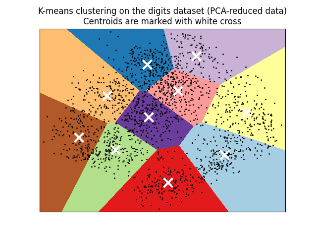
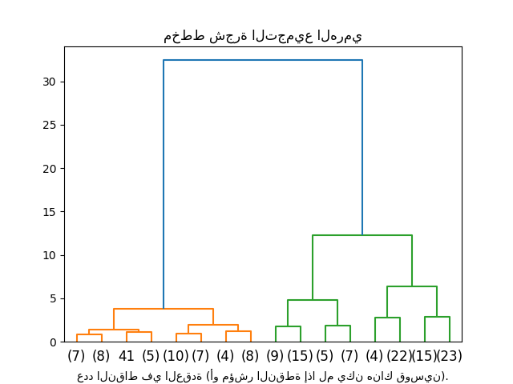
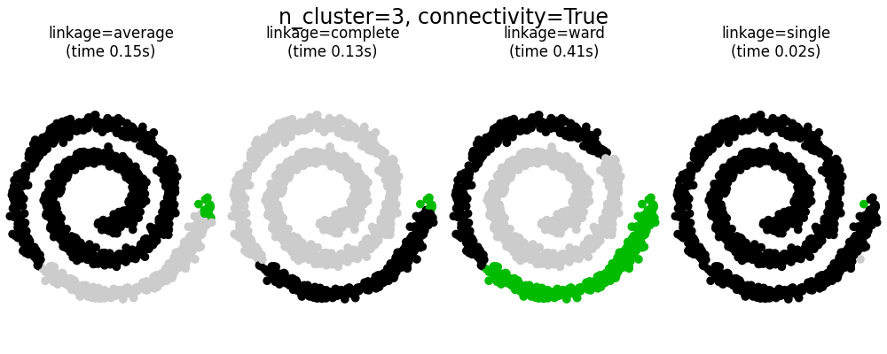
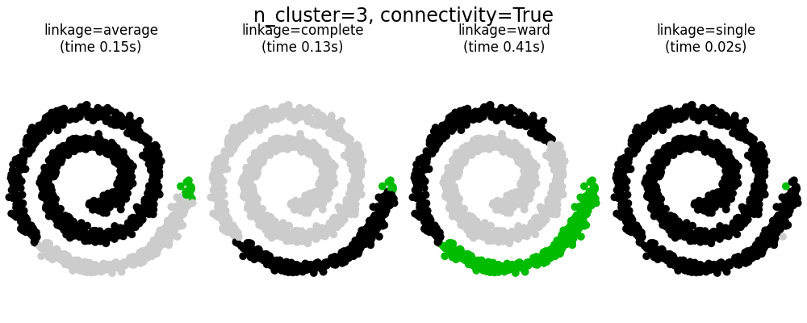

2.3. التجميع#
يمكن إجراء التجميع لـ
البيانات غير المُصنّفة مع الوحدة sklearn.cluster.
تأتي كل خوارزمية تجميع في نوعين مختلفين: فئة، تنفذ طريقة fit لتعلم المجموعات على بيانات التدريب، ودالة، تُرجع، بالنظر إلى بيانات التدريب، مصفوفة من تسميات الأعداد الصحيحة المقابلة للمجموعات المختلفة.
بالنسبة للفئة، يمكن العثور على التسميات على بيانات التدريب في سمة labels_.
2.3.1. نظرة عامة على طرق التجميع#
مقارنة خوارزميات التجميع في scikit-learn#
اسم الطريقة |
المعلمات |
قابلية التوسع |
حالة الاستخدام |
الهندسة (المقياس المستخدم) |
|---|---|---|---|---|
عدد المجموعات |
|
للأغراض العامة، حتى حجم الكتلة، هندسة مسطحة، ليس عددًا كبيرًا جدًا من المجموعات، استقرائي |
المسافات بين النقاط |
|
التخميد، تفضيل العينة |
غير قابل للتطوير مع n_samples |
العديد من المجموعات، حجم الكتلة غير المتكافئ، الهندسة غير المسطحة، استقرائي |
مسافة الرسم البياني (على سبيل المثال، رسم بياني لأقرب جار) |
|
عرض النطاق الترددي |
غير قابل للتطوير مع |
العديد من المجموعات، حجم الكتلة غير المتكافئ، الهندسة غير المسطحة، استقرائي |
المسافات بين النقاط |
|
عدد المجموعات |
|
عدد قليل من المجموعات، حتى حجم الكتلة، هندسة غير مسطحة، استنتاجي |
مسافة الرسم البياني (على سبيل المثال، رسم بياني لأقرب جار) |
|
عدد المجموعات أو عتبة المسافة |
|
العديد من المجموعات، وربما قيود الاتصال، استنتاجي |
المسافات بين النقاط |
|
عدد المجموعات أو عتبة المسافة، نوع الارتباط، المسافة |
|
العديد من المجموعات، وربما قيود الاتصال، غير الإقليدية المسافات، استنتاجي |
أي مسافة زوجية |
|
حجم الحي |
|
هندسة غير مسطحة، أحجام مجموعات غير متساوية، إزالة القيم المتطرفة، استنتاجي |
المسافات بين أقرب النقاط |
|
الحد الأدنى لعضوية الكتلة، الحد الأدنى لجيران النقطة |
|
هندسة غير مسطحة، أحجام مجموعات غير متساوية، إزالة القيم المتطرفة، استنتاجي، هرمي، كثافة كتلة متغيرة |
المسافات بين أقرب النقاط |
|
الحد الأدنى لعضوية الكتلة |
|
هندسة غير مسطحة، أحجام مجموعات غير متساوية، كثافة كتلة متغيرة، إزالة القيم المتطرفة، استنتاجي |
المسافات بين النقاط |
|
كثير |
غير قابل للتطوير |
هندسة مسطحة، جيدة لتقدير الكثافة، استقرائي |
مسافات Mahalanobis إلى المراكز |
|
عامل التفرع، العتبة، التجميع العالمي الاختياري. |
|
مجموعة بيانات كبيرة، إزالة القيم المتطرفة، تقليل البيانات، استقرائي |
المسافة الإقليدية بين النقاط |
|
عدد المجموعات |
|
للأغراض العامة، حتى حجم الكتلة، هندسة مسطحة، لا توجد مجموعات فارغة، استقرائي، هرمي |
المسافات بين النقاط |
يكون تجميع الهندسة غير المسطحة مفيدًا عندما يكون للمجموعات شكل محدد، أي مشعب غير مسطح، والمسافة الإقليدية القياسية ليست هي المقياس الصحيح. تنشأ هذه الحالة في الصفين العلويين من الشكل أعلاه.
يتم وصف نماذج خليط غاوسية، المفيدة للتجميع، في فصل آخر من الوثائق مخصص لنماذج الخليط. يمكن اعتبار KMeans حالة خاصة من نموذج خليط غاوسي مع التباين المتساوي لكل مكون.
طرق التجميع Transductive (على عكس طرق التجميع inductive) ليست مصممة لتطبيقها على بيانات جديدة غير مرئية.
2.3.2. K-means#
تقوم خوارزمية KMeans بتجميع البيانات من خلال محاولة فصل العينات في n مجموعات ذات تباين متساوٍ، مما يقلل من معيار يُعرف باسم القصور الذاتي أو مجموع المربعات داخل الكتلة (انظر أدناه).
تتطلب هذه الخوارزمية تحديد عدد المجموعات.
إنه قابل للتطوير بشكل جيد لعدد كبير من العينات وقد تم استخدامه عبر مجموعة كبيرة من مجالات التطبيق في العديد من المجالات المختلفة.
تقسم خوارزمية k-means مجموعة من \(N\) عينات \(X\) إلى \(K\) مجموعات منفصلة \(C\)، يتم وصف كل منها بالمتوسط \(\mu_j\) للعينات في المجموعة. يُطلق على الوسائل عادةً "مراكز" الكتلة؛ لاحظ أنها ليست، بشكل عام، نقاطًا من \(X\)، على الرغم من أنها تعيش في نفس المساحة.
تهدف خوارزمية K-means إلى اختيار مراكز تقلل من القصور الذاتي، أو معيار مجموع المربعات داخل الكتلة:
يمكن التعرف على القصور الذاتي كمقياس لمدى تماسك المجموعات داخليًا. إنه يعاني من عيوب مختلفة:
يفترض القصور الذاتي أن المجموعات محدبة ومتجانسة الخواص، وهو ليس الحال دائمًا. يستجيب بشكل سيئ للمجموعات الممدودة، أو المشعبات ذات الأشكال غير المنتظمة.
القصور الذاتي ليس مقياسًا طبيعيًا: نحن نعلم فقط أن القيم المنخفضة أفضل وأن الصفر هو الأمثل. ولكن في المساحات عالية الأبعاد للغاية، تميل المسافات الإقليدية إلى أن تصبح متضخمة (هذه حالة لما يسمى "لعنة الأبعاد"). يمكن أن يؤدي تشغيل خوارزمية تقليل الأبعاد مثل تحليل المكونات الرئيسية (PCA) قبل تجميع k-means إلى تخفيف هذه المشكلة وتسريع العمليات الحسابية.
للحصول على أوصاف أكثر تفصيلاً للمشكلات الموضحة أعلاه وكيفية معالجتها، ارجع إلى الأمثلة sphx_glr_auto_examples_cluster/plot_kmeans_assumptions.py و sphx_glr_auto_examples_cluster/plot_kmeans_silhouette_analysis.py.
غالبًا ما يشار إلى K-means باسم خوارزمية لويد. بعبارات أساسية، تتكون الخوارزمية من ثلاث خطوات. تختار الخطوة الأولى المراكز الأولية، مع كون الطريقة الأساسية هي اختيار \(k\) عينات من مجموعة البيانات \(X\). بعد التهيئة، يتكون K-means من التكرار بين الخطوتين الأخريين. تقوم الخطوة الأولى بتعيين كل عينة إلى أقرب مركز لها. تقوم الخطوة الثانية بإنشاء مراكز جديدة عن طريق أخذ القيمة المتوسطة لجميع العينات المعينة لكل مركز سابق. يتم حساب الفرق بين المراكز القديمة والجديدة وتكرر الخوارزمية هاتين الخطوتين الأخيرتين حتى تصبح هذه القيمة أقل من عتبة. بمعنى آخر، يتكرر حتى لا تتحرك المراكز بشكل ملحوظ.
K-means مكافئ لخوارزمية تعظيم التوقع مع مصفوفة تباين قطرية صغيرة ومتساوية.
يمكن أيضًا فهم الخوارزمية من خلال مفهوم مخططات فورونوي. أولاً، يتم حساب مخطط فورونوي للنقاط باستخدام المراكز الحالية. يصبح كل جزء في مخطط فورونوي مجموعة منفصلة. ثانيًا، يتم تحديث المراكز إلى متوسط كل جزء. ثم تكرر الخوارزمية هذا حتى يتم استيفاء معيار التوقف. عادةً، تتوقف الخوارزمية عندما يكون الانخفاض النسبي في دالة الهدف بين التكرارات أقل من قيمة التسامح المعطاة. هذا ليس هو الحال في هذا التنفيذ: يتوقف التكرار عندما تتحرك المراكز أقل من التسامح.
مع إعطاء الوقت الكافي، سيتقارب K-means دائمًا، ومع ذلك قد يكون هذا إلى حد أدنى محلي.
هذا يعتمد بشكل كبير على تهيئة المراكز.
ونتيجة لذلك، غالبًا ما يتم إجراء الحساب عدة مرات، مع تهيئة مختلفة للمراكز.
إحدى الطرق للمساعدة في معالجة هذه المشكلة هي مخطط التهيئة k-means ++، والذي تم تنفيذه في scikit-learn (استخدم معلمة init='k-means++').
يقوم هذا بتهيئة المراكز لتكون (بشكل عام) بعيدة عن بعضها البعض، مما يؤدي إلى نتائج أفضل على الأرجح من التهيئة العشوائية، كما هو موضح في المرجع.
للحصول على مثال مفصل لمقارنة مخططات التهيئة المختلفة، ارجع إلى
sphx_glr_auto_examples_cluster/plot_kmeans_digits.py.
يمكن أيضًا استدعاء K-means ++ بشكل مستقل لتحديد البذور لخوارزميات التجميع الأخرى، انظر sklearn.cluster.kmeans_plusplus للحصول على التفاصيل واستخدام المثال.
تدعم الخوارزمية أوزان العينة، والتي يمكن إعطاؤها بواسطة معلمة sample_weight.
يسمح هذا بتعيين وزن أكبر لبعض العينات عند حساب مراكز الكتلة وقيم القصور الذاتي.
على سبيل المثال، فإن تعيين وزن 2 لعينة يعادل إضافة نسخة مكررة من تلك العينة إلى مجموعة البيانات \(X\).
يمكن استخدام K-means لتقدير المتجه. يتم تحقيق ذلك باستخدام طريقة transform لنموذج مدرب من KMeans.
للحصول على مثال على إجراء تقدير المتجه على صورة، ارجع إلى sphx_glr_auto_examples_cluster/plot_color_quantization.py.
أمثلة
sphx_glr_auto_examples_cluster/plot_cluster_iris.py: مثال على استخدام
KMeansباستخدام مجموعة بيانات irissphx_glr_auto_examples_text/plot_document_clustering.py: تجميع المستندات باستخدام
KMeansوMiniBatchKMeansبناءً على البيانات المتفرقة
2.3.2.1. التوازي منخفض المستوى#
يستفيد KMeans من التوازي القائم على OpenMP من خلال Cython.
يتم معالجة أجزاء صغيرة من البيانات (256 عينة) بالتوازي، مما ينتج عنه أيضًا انخفاض في حجم الذاكرة.
لمزيد من التفاصيل حول كيفية التحكم في عدد سلاسل الرسائل، يرجى الرجوع إلى ملاحظات التوازي.
أمثلة
sphx_glr_auto_examples_cluster/plot_kmeans_assumptions.py: إظهار متى يؤدي k-means بشكل حدسي ومتى لا يؤدي
sphx_glr_auto_examples_cluster/plot_kmeans_digits.py: تجميع الأرقام المكتوبة بخط اليد
المراجع#
"k-means++: The advantages of careful seeding" Arthur، David، و Sergei Vassilvitskii، Proceedings of the eighteenth annual ACM-SIAM symposium on Discrete algorithms، Society for Industrial and Applied Mathematics (2007)
2.3.2.2. Mini Batch K-Means#
MiniBatchKMeans هو نوع مختلف من خوارزمية KMeans التي تستخدم مجموعات صغيرة لتقليل وقت الحساب، مع الاستمرار في محاولة تحسين نفس دالة الهدف.
المجموعات الصغيرة هي مجموعات فرعية من بيانات الإدخال، يتم أخذ عينات منها عشوائيًا في كل تكرار تدريب.
تقلل هذه المجموعات الصغيرة بشكل كبير من مقدار الحساب المطلوب للتقارب إلى حل محلي.
على عكس الخوارزميات الأخرى التي تقلل من وقت تقارب k-means، فإن k-means المصغرة تنتج نتائج أسوأ بشكل عام قليلاً من الخوارزمية القياسية.
تتكرر الخوارزمية بين خطوتين رئيسيتين، على غرار k-means الفانيليا. في الخطوة الأولى، يتم رسم \(b\) عينات عشوائيًا من مجموعة البيانات، لتشكيل مجموعة صغيرة. ثم يتم تعيينها إلى أقرب مركز. في الخطوة الثانية، يتم تحديث المراكز. على عكس k-means، يتم ذلك على أساس كل عينة. لكل عينة في المجموعة المصغرة، يتم تحديث المركز المعين عن طريق أخذ المتوسط المتدفق للعينة وجميع العينات السابقة المعينة إلى هذا المركز. هذا له تأثير تقليل معدل التغيير لمركز بمرور الوقت. يتم تنفيذ هذه الخطوات حتى التقارب أو الوصول إلى عدد محدد مسبقًا من التكرارات.
يتقارب MiniBatchKMeans بشكل أسرع من KMeans، ولكن يتم تقليل جودة النتائج.
من الناحية العملية، يمكن أن يكون هذا الاختلاف في الجودة صغيرًا جدًا، كما هو موضح في المثال والمرجع المذكور.
أمثلة
sphx_glr_auto_examples_cluster/plot_mini_batch_kmeans.py: مقارنة
KMeansوMiniBatchKMeanssphx_glr_auto_examples_text/plot_document_clustering.py: تجميع المستندات باستخدام
KMeansوMiniBatchKMeansبناءً على البيانات المتفرقةsphx_glr_auto_examples_cluster/plot_dict_face_patches.py
المراجع#
"Web Scale K-Means clustering" D. Sculley، Proceedings of the 19th international conference on World wide web (2010)
2.3.3. انتشار التقارب#
ينشئ AffinityPropagation مجموعات عن طريق إرسال رسائل بين أزواج من العينات حتى التقارب.
ثم يتم وصف مجموعة البيانات باستخدام عدد صغير من النماذج، والتي يتم تحديدها على أنها الأكثر تمثيلاً لعينات أخرى.
تمثل الرسائل المرسلة بين الأزواج مدى ملاءمة عينة واحدة لتكون نموذجًا للأخرى، والتي يتم تحديثها استجابةً للقيم من الأزواج الأخرى.
يحدث هذا التحديث بشكل متكرر حتى التقارب، وعند هذه النقطة يتم اختيار النماذج النهائية، وبالتالي يتم إعطاء التجميع النهائي.

يمكن أن يكون انتشار التقارب مثيرًا للاهتمام لأنه يختار عدد المجموعات بناءً على البيانات المقدمة. لهذا الغرض، فإن المعلمتين المهمتين هما التفضيل، الذي يتحكم في عدد النماذج المستخدمة، و عامل التخميد الذي يخمد رسائل المسؤولية والتوافر لتجنب التذبذبات العددية عند تحديث هذه الرسائل.
العيب الرئيسي لانتشار التقارب هو تعقيده. تبلغ تعقيد الخوارزمية الزمني من الرتبة \(O(N^2 T)\)، حيث \(N\) هو عدد العينات و \(T\) هو عدد التكرارات حتى التقارب. علاوة على ذلك، فإن تعقيد الذاكرة هو من الرتبة \(O(N^2)\) إذا تم استخدام مصفوفة تشابه كثيفة، ولكن يمكن اختزالها إذا تم استخدام مصفوفة تشابه متفرقة. هذا يجعل انتشار التقارب هو الأنسب لمجموعات البيانات الصغيرة والمتوسطة الحجم.
وصف الخوارزمية#
تنتمي الرسائل المرسلة بين النقاط إلى إحدى فئتين. الأولى هي المسؤولية \(r(i, k)\)، وهي الدليل المتراكم على أن العينة \(k\) يجب أن تكون نموذجًا للعينة \(i\). الثاني هو التوافر \(a(i, k)\) وهو الدليل المتراكم على أن العينة \(i\) يجب أن تختار العينة \(k\) لتكون نموذجًا لها، وتأخذ في الاعتبار القيم لجميع العينات الأخرى التي يجب أن تكون \(k\) نموذجًا. بهذه الطريقة، يتم اختيار النماذج بواسطة العينات إذا كانت (1) متشابهة بدرجة كافية مع العديد من العينات و (2) تم اختيارها من قبل العديد من العينات لتكون ممثلة لنفسها.
بشكل أكثر رسمية، تُعطى مسؤولية عينة \(k\) لتكون نموذجًا للعينة \(i\) من خلال:
حيث \(s(i, k)\) هو التشابه بين العينات \(i\) و \(k\). توافر العينة \(k\) ليكون نموذجًا للعينة \(i\) هو معطى بواسطة:
في البداية، يتم تعيين جميع القيم لـ \(r\) و \(a\) على صفر، ويتم حساب كل تكرار حتى التقارب. كما نوقش أعلاه، من أجل تجنب التذبذبات العددية عند تحديث الرسائل، يتم إدخال عامل التخميد \(\lambda\) إلى عملية التكرار:
حيث \(t\) يشير إلى أوقات التكرار.
أمثلة
sphx_glr_auto_examples_cluster/plot_affinity_propagation.py: انتشار التقارب على مجموعات بيانات ثنائية الأبعاد اصطناعية مع 3 فئات
sphx_glr_auto_examples_applications/plot_stock_market.py انتشار التقارب على السلاسل الزمنية المالية للعثور على مجموعات من الشركات
2.3.4. Mean Shift#
يهدف تجميع MeanShift إلى اكتشاف النقاط في كثافة سلسة للعينات.
إنها خوارزمية تعتمد على النقطه المركزية، والتي تعمل عن طريق تحديث المرشحين للمراكز ليكونوا متوسط النقاط داخل منطقة معينة.
ثم يتم تصفية هؤلاء المرشحين في مرحلة ما بعد المعالجة للقضاء على التكرارات القريبة لتشكيل المجموعة النهائية من المراكز.
التفاصيل الرياضية#
يتم تعديل موضع المرشحين للنقطه المركزية بشكل متكرر باستخدام تقنية تسمى تسلق التل، والتي تجد الحدود القصوى المحلية لكثافة الاحتمال المقدرة. بالنظر إلى النقطه المركزية المرشحة \(x\) للتكرار \(t\)، يتم تحديث المرشح وفقًا للمعادلة التالية:
حيث \(m\) هو متجه إزاحة المتوسط الذي يتم حسابه لكل نقطة مركزية تشير نحو منطقة الزيادة القصوى في كثافة النقاط. لحساب \(m\)، نحدد \(N(x)\) على أنها جوار العينات ضمن مسافة معينة حول \(x\). ثم يتم حساب \(m\) باستخدام المعادلة التالية، مما يؤدي إلى تحديث النقطه المركزية بشكل فعال لتكون متوسط العينات داخل جوارها:
بشكل عام، تعتمد معادلة \(m\) على نواة تستخدم لتقدير الكثافة. الصيغة العامة هي:
في تطبيقنا، \(K(x)\) يساوي 1 إذا كان \(x\) صغيرًا بما يكفي ويساوي 0 بخلاف ذلك. يشير \(K(y - x)\) بشكل فعال إلى ما إذا كان \(y\) في جوار \(x\).
تحدد الخوارزمية تلقائيًا عدد المجموعات، بدلاً من الاعتماد على معلمة bandwidth، التي تملي حجم المنطقة للبحث من خلالها.
يمكن تعيين هذه المعلمة يدويًا، ولكن يمكن تقديرها باستخدام دالة estimate_bandwidth المقدمة، والتي يتم استدعاؤها إذا لم يتم تعيين عرض النطاق الترددي.
الخوارزمية ليست قابلة للتطوير بدرجة عالية، لأنها تتطلب بحثًا متعددًا عن أقرب جار أثناء تنفيذ الخوارزمية. من المضمون أن تتقارب الخوارزمية، ومع ذلك ستتوقف الخوارزمية عن التكرار عندما يكون التغيير في المراكز صغيرًا.
يتم إجراء تسمية عينة جديدة عن طريق إيجاد أقرب مركز لعينة معينة.
أمثلة
sphx_glr_auto_examples_cluster/plot_mean_shift.py: تجميع Mean Shift على مجموعات بيانات ثنائية الأبعاد اصطناعية مع 3 فئات.
المراجع#
"Mean shift: A robust approach toward feature space analysis" D. Comaniciu and P. Meer، IEEE Transactions on Pattern Analysis and Machine Intelligence (2002)
2.3.5. التجميع الطيفي#
يقوم SpectralClustering بتضمين منخفض الأبعاد لمصفوفة التقارب بين العينات، متبوعًا بالتجميع، على سبيل المثال، بواسطة KMeans، لمكونات المتجهات الذاتية في الفضاء منخفض الأبعاد.
إنه فعال من الناحية الحسابية خاصةً إذا كانت مصفوفة التقارب متفرقة وتم استخدام أداة الحل amg لمشكلة القيمة الذاتية (ملاحظة، تتطلب أداة الحل amg تثبيت الوحدة pyamg.)
يتطلب الإصدار الحالي من SpectralClustering تحديد عدد المجموعات مسبقًا. إنه يعمل بشكل جيد لعدد صغير من المجموعات، لكن لا ينصح به للعديد من المجموعات.
بالنسبة لمجموعتين، يحل SpectralClustering استرخاء محدب لمشكلة القطع الطبيعية على الرسم البياني للتشابه: قطع الرسم البياني إلى قسمين بحيث يكون وزن الحواف المقطوعة صغيرًا مقارنة بأوزان الحواف داخل كل مجموعة. يكون هذا المعيار مثيرًا للاهتمام بشكل خاص عند العمل على الصور، حيث تكون رؤوس الرسم البياني هي وحدات البكسل، ويتم حساب أوزان حواف الرسم البياني للتشابه باستخدام دالة لتدرج الصورة.
تحذير
تحويل المسافة إلى أوجه تشابه جيدة التصرف
لاحظ أنه إذا لم يتم توزيع قيم مصفوفة التشابه الخاصة بك بشكل جيد، على سبيل المثال مع قيم سالبة أو مع مصفوفة مسافة بدلاً من التشابه، فستكون المشكلة الطيفية مفردة والمشكلة غير قابلة للحل. في هذه الحالة، يُنصح بتطبيق تحويل على إدخالات المصفوفة. على سبيل المثال، في حالة مصفوفة المسافة الموقعة، من الشائع تطبيق نواة حرارية:
similarity = np.exp(-beta * distance / distance.std())
انظر الأمثلة لمثل هذا التطبيق.
أمثلة
sphx_glr_auto_examples_cluster/plot_segmentation_toy.py: تجزئة الكائنات من خلفية صاخبة باستخدام التجميع الطيفي.
sphx_glr_auto_examples_cluster/plot_coin_segmentation.py: التجميع الطيفي لتقسيم صورة العملات المعدنية في المناطق.
2.3.5.1. استراتيجيات تعيين التسميات المختلفة#
يمكن استخدام استراتيجيات تعيين التسميات المختلفة، المقابلة لمعلمة assign_labels لـ SpectralClustering.
يمكن لاستراتيجية "kmeans" مطابقة التفاصيل الدقيقة، ولكن يمكن أن تكون غير مستقرة.
على وجه الخصوص، ما لم تتحكم في random_state، فقد لا تكون قابلة للتكرار من تشغيل إلى تشغيل، لأنها تعتمد على التهيئة العشوائية.
استراتيجية "discretize" البديلة قابلة للتكرار بنسبة 100٪، ولكنها تميل إلى إنشاء قطع ذات شكل هندسي ومتساوي إلى حد ما.
يعد خيار "cluster_qr" المضاف مؤخرًا بديلاً حتميًا يميل إلى إنشاء أفضل تقسيم مرئيًا على تطبيق المثال أدناه.
المراجع#
"Multiclass spectral clustering" Stella X. Yu، Jianbo Shi، 2003
"Simple, direct, and efficient multi-way spectral clustering" Anil Damle، Victor Minden، Lexing Ying، 2019
2.3.5.2. الرسوم البيانية للتجميع الطيفي#
يمكن أيضًا استخدام التجميع الطيفي لتقسيم الرسوم البيانية عبر تضميناتها الطيفية.
في هذه الحالة، تكون مصفوفة التقارب هي مصفوفة التجاور للرسم البياني، ويتم تهيئة SpectralClustering باستخدام affinity='precomputed':
>>> from sklearn.cluster import SpectralClustering
>>> sc = SpectralClustering(3, affinity='precomputed', n_init=100,
... assign_labels='discretize')
>>> sc.fit_predict(adjacency_matrix)
المراجع#
"A Tutorial on Spectral Clustering" Ulrike von Luxburg، 2007
"Normalized cuts and image segmentation" Jianbo Shi، Jitendra Malik، 2000
"A Random Walks View of Spectral Segmentation" Marina Meila، Jianbo Shi، 2001
"On Spectral Clustering: Analysis and an algorithm" Andrew Y. Ng، Michael I. Jordan، Yair Weiss، 2001
"Preconditioned Spectral Clustering for Stochastic Block Partition Streaming Graph Challenge" David Zhuzhunashvili، Andrew Knyazev
2.3.6. التجميع الهرمي#
التجميع الهرمي هو عائلة عامة من خوارزميات التجميع التي تبني مجموعات متداخلة عن طريق دمجها أو تقسيمها على التوالي. يتم تمثيل هذا التسلسل الهرمي للمجموعات كشجرة (أو مخطط شجري). جذر الشجرة هو المجموعة الفريدة التي تجمع كل العينات، والأوراق هي المجموعات التي تحتوي على عينة واحدة فقط. انظر صفحة ويكيبيديا لمزيد من التفاصيل.
يقوم الكائن AgglomerativeClustering بإجراء تجميع هرمي باستخدام نهج من أسفل إلى أعلى: تبدأ كل ملاحظة في مجموعتها الخاصة، ويتم دمج المجموعات معًا على التوالي. تحدد معايير الارتباط المقياس المستخدم لاستراتيجية الدمج:
Ward يقلل من مجموع الفروق التربيعية داخل جميع المجموعات. إنه نهج يقلل من التباين وبهذا المعنى يشبه دالة الهدف k-means ولكن يتم معالجتها باستخدام نهج هرمي تكتلي.
الحد الأقصى أو الارتباط الكامل يقلل من المسافة القصوى بين ملاحظات أزواج المجموعات.
الارتباط المتوسط يقلل من متوسط المسافات بين جميع ملاحظات أزواج المجموعات.
الارتباط الفردي يقلل من المسافة بين أقرب ملاحظات أزواج المجموعات.
يمكن أيضًا قياس AgglomerativeClustering لعدد كبير من العينات عند استخدامه بشكل مشترك مع مصفوفة اتصال، ولكنه مكلف من الناحية الحسابية عند عدم إضافة قيود اتصال بين العينات: فهو يأخذ في الاعتبار جميع عمليات الدمج الممكنة في كل خطوة.
2.3.6.1. نوع الارتباط المختلف: ارتباط Ward، كامل، متوسط، وفردي#
يدعم AgglomerativeClustering استراتيجيات ارتباط Ward، فردي، متوسط، وكامل.
تتمتع الكتلة التكتلية بسلوك "الغني يزداد ثراءً" مما يؤدي إلى أحجام مجموعات غير متساوية. في هذا الصدد، يعد الارتباط الفردي هو أسوأ استراتيجية، ويمنح Ward الأحجام الأكثر انتظامًا. ومع ذلك، لا يمكن تغيير التقارب (أو المسافة المستخدمة في التجميع) مع Ward، وبالتالي بالنسبة للمقاييس غير الإقليدية، فإن الارتباط المتوسط هو بديل جيد. يمكن حساب الارتباط الفردي، على الرغم من أنه ليس قويًا للبيانات الصاخبة، بكفاءة عالية وبالتالي يمكن أن يكون مفيدًا لتوفير تجميع هرمي لمجموعات البيانات الأكبر. يمكن أن يؤدي الارتباط الفردي أيضًا أداءً جيدًا على البيانات غير الكروية.
أمثلة
sphx_glr_auto_examples_cluster/plot_digits_linkage.py: استكشاف استراتيجيات الارتباط المختلفة في مجموعة بيانات حقيقية.
sphx_glr_auto_examples_cluster/plot_linkage_comparison.py: استكشاف استراتيجيات الارتباط المختلفة في مجموعات بيانات اللعبة.
2.3.6.2. تصور التسلسل الهرمي للكتلة#
من الممكن تصور الشجرة التي تمثل الدمج الهرمي للمجموعات كمخطط شجري. يمكن أن يكون الفحص البصري مفيدًا غالبًا لفهم بنية البيانات، على الرغم من أنه أكثر من ذلك في حالة أحجام العينات الصغيرة.
أمثلة
sphx_glr_auto_examples_cluster/plot_agglomerative_dendrogram.py
2.3.6.3. إضافة قيود الاتصال#
أحد الجوانب المثيرة للاهتمام لـ AgglomerativeClustering هو أنه يمكن إضافة قيود الاتصال إلى هذه الخوارزمية (يمكن دمج المجموعات المجاورة فقط معًا)، من خلال مصفوفة اتصال تحدد لكل عينة العينات المجاورة التي تتبع بنية معينة للبيانات.
على سبيل المثال، في مثال swiss-roll أدناه، تحظر قيود الاتصال دمج النقاط التي لا تجاور على swiss roll، وبالتالي تتجنب تشكيل مجموعات تمتد عبر طيات متداخلة للفة.
تكون هذه القيود مفيدة لفرض بنية محلية معينة، لكنها تجعل الخوارزمية أسرع أيضًا، خاصةً عندما يكون عدد العينات مرتفعًا.
يتم فرض قيود الاتصال عبر مصفوفة الاتصال: مصفوفة scipy متفرقة تحتوي على عناصر فقط عند تقاطع صف وعمود مع مؤشرات مجموعة البيانات التي يجب توصيلها.
يمكن إنشاء هذه المصفوفة من معلومات مسبقة: على سبيل المثال، قد ترغب في تجميع صفحات الويب عن طريق دمج الصفحات التي تحتوي على رابط يشير من واحدة إلى أخرى فقط.
يمكن أيضًا تعلمه من البيانات، على سبيل المثال باستخدام sklearn.neighbors.kneighbors_graph لتقييد الدمج لأقرب الجيران كما هو الحال في هذا المثال، أو باستخدام sklearn.feature_extraction.image.grid_to_graph لتمكين دمج وحدات البكسل المجاورة فقط على صورة، كما في مثال العملة.
تحذير
قيود الاتصال مع الارتباط الفردي والمتوسط والكلي
يمكن أن تعزز قيود الاتصال والارتباط الفردي أو الكامل أو المتوسط جانب "الغني يزداد ثراءً" للتجميع التكتلي، لا سيما إذا تم بناؤها باستخدام sklearn.neighbors.kneighbors_graph.
في حدود عدد صغير من المجموعات، تميل إلى إعطاء عدد قليل من المجموعات المشغولة بشكل مجهري وتلك الفارغة تقريبًا.
(انظر المناقشة في sphx_glr_auto_examples_cluster/plot_agglomerative_clustering.py).
الارتباط الفردي هو خيار الارتباط الأكثر هشاشة فيما يتعلق بهذه المشكلة.
 

أمثلة
sphx_glr_auto_examples_cluster/plot_coin_ward_segmentation.py: تجميع Ward لتقسيم صورة العملات المعدنية في المناطق.
sphx_glr_auto_examples_cluster/plot_ward_structured_vs_unstructured.py: مثال على خوارزمية Ward على swiss-roll، مقارنة بين الأساليب المنظمة مقابل الأساليب غير المنظمة.
sphx_glr_auto_examples_cluster/plot_feature_agglomeration_vs_univariate_selection.py: مثال على تقليل الأبعاد مع تجميع الميزات بناءً على تجميع Ward الهرمي.
sphx_glr_auto_examples_cluster/plot_agglomerative_clustering.py
2.3.6.4. تغيير المقياس#
يمكن استخدام الارتباط الفردي والمتوسط والكلي مع مجموعة متنوعة من المسافات (أو التقاربات)، لا سيما المسافة الإقليدية (l2)، ومسافة مانهاتن (أو Cityblock، أو l1)، ومسافة جيب التمام، أو أي مصفوفة تقارب محسوبة مسبقًا.
غالبًا ما تكون مسافة l1 جيدة للميزات المتفرقة، أو الضوضاء المتفرقة: أي أن العديد من الميزات تساوي صفرًا، كما هو الحال في استخراج النص باستخدام تكرارات الكلمات النادرة.
مسافة جيب التمام مثيرة للاهتمام لأنها ثابتة بالنسبة للتدرجات العالمية للإشارة.
الإرشادات لاختيار مقياس هي استخدام مقياس يزيد المسافة بين العينات في فئات مختلفة، ويقلل ذلك داخل كل فئة.


أمثلة
sphx_glr_auto_examples_cluster/plot_agglomerative_clustering_metrics.py
2.3.6.5. Bisecting K-Means#
BisectingKMeans هو متغير تكراري لـ KMeans، باستخدام التجميع الهرمي المقسم.
بدلاً من إنشاء جميع المراكز في وقت واحد، يتم اختيار المراكز بشكل تدريجي بناءً على تجميع سابق: يتم تقسيم الكتلة إلى مجموعتين جديدتين بشكل متكرر حتى يتم الوصول إلى العدد المستهدف من المجموعات.
BisectingKMeans أكثر كفاءة من KMeans عندما يكون عدد المجموعات كبيرًا لأنه يعمل فقط على مجموعة فرعية من البيانات في كل قسم بينما يعمل KMeans دائمًا على مجموعة البيانات بأكملها.
على الرغم من أن BisectingKMeans لا يمكنه الاستفادة من مزايا تهيئة "k-means++" عن طريق التصميم، إلا أنه سيظل ينتج نتائج قابلة للمقارنة مع KMeans(init="k-means++") من حيث القصور الذاتي بتكاليف حسابية أرخص، ومن المحتمل أن ينتج نتائج أفضل من KMeans مع التهيئة العشوائية.
هذا المتغير أكثر كفاءة للتجميع التكتلي إذا كان عدد المجموعات صغيرًا مقارنة بعدد نقاط البيانات.
لا ينتج هذا المتغير أيضًا مجموعات فارغة.
- توجد استراتيجيتان لاختيار الكتلة لتقسيمها:
bisecting_strategy="largest_cluster"يختار الكتلة التي تحتوي على معظم النقاطbisecting_strategy="biggest_inertia"يختار الكتلة ذات أكبر قصور ذاتي (الكتلة ذات أكبر مجموع أخطاء مربعة داخل)
ينتج عن الاختيار حسب أكبر قدر من نقاط البيانات في معظم الحالات نتيجة دقيقة مثل الاختيار حسب القصور الذاتي وهو أسرع (خاصة بالنسبة لكمية أكبر من نقاط البيانات، حيث قد يكون حساب الخطأ مكلفًا).
من المرجح أيضًا أن ينتج عن الاختيار حسب أكبر قدر من نقاط البيانات مجموعات ذات أحجام متشابهة بينما من المعروف أن KMeans ينتج مجموعات ذات أحجام مختلفة.
يمكن رؤية الفرق بين Bisecting K-Means و K-Means العادي في المثال sphx_glr_auto_examples_cluster/plot_bisect_kmeans.py. بينما تميل خوارزمية K-Means العادية إلى إنشاء مجموعات غير ذات صلة، يتم ترتيب المجموعات من Bisecting K-Means بشكل جيد وإنشاء تسلسل هرمي مرئي تمامًا.
المراجع#
"A Comparison of Document Clustering Techniques" Michael Steinbach، George Karypis and Vipin Kumar، Department of Computer Science and Egineering، University of Minnesota (June 2000)
"Performance Analysis of K-Means and Bisecting K-Means Algorithms in Weblog Data" K.Abirami and Dr.P.Mayilvahanan، International Journal of Emerging Technologies in Engineering Research (IJETER) Volume 4، Issue 8، (August 2016)
"Bisecting K-means Algorithm Based on K-valued Self-determining and Clustering Center Optimization" Jian Di، Xinyue Gou School of Control and Computer Engineering، North China Electric Power University، Baoding، Hebei، China (August 2017)
2.3.7. DBSCAN#
ترى خوارزمية DBSCAN المجموعات على أنها مناطق ذات كثافة عالية مفصولة بمناطق ذات كثافة منخفضة.
نظرًا لهذه الرؤية العامة إلى حد ما، يمكن أن تكون المجموعات التي تم العثور عليها بواسطة DBSCAN بأي شكل، على عكس k-means التي تفترض أن المجموعات محدبة الشكل.
المكون المركزي لـ DBSCAN هو مفهوم العينات الأساسية، وهي عينات موجودة في مناطق ذات كثافة عالية.
لذلك، فإن الكتلة عبارة عن مجموعة من العينات الأساسية، كل منها قريب من بعضها البعض (يقاس ببعض مقياس المسافة) ومجموعة من العينات غير الأساسية القريبة من عينة أساسية (لكنها ليست عينات أساسية).
هناك معلمتان للخوارزمية، min_samples و eps، اللتان تحددان رسميًا ما نعنيه عندما نقول كثيف.
يشير min_samples الأعلى أو eps الأقل إلى كثافة أعلى ضرورية لتشكيل مجموعة.
بشكل أكثر رسمية، نحدد عينة أساسية على أنها عينة في مجموعة البيانات بحيث توجد min_samples عينات أخرى على مسافة eps، والتي تُعرّف على أنها جيران للعينة الأساسية.
يخبرنا هذا أن العينة الأساسية موجودة في منطقة كثيفة من فضاء المتجه.
الكتلة هي مجموعة من العينات الأساسية التي يمكن بناؤها عن طريق أخذ عينة أساسية بشكل متكرر، والعثور على جميع جيرانها من العينات الأساسية، والعثور على جميع جيرانها من العينات الأساسية، وهكذا.
تحتوي الكتلة أيضًا على مجموعة من العينات غير الأساسية، وهي عينات مجاورة لعينة أساسية في الكتلة ولكنها ليست عينات أساسية.
بشكل حدسي، توجد هذه العينات على أطراف الكتلة.
أي عينة أساسية هي جزء من مجموعة، بحكم التعريف.
أي عينة ليست عينة أساسية، وتكون على مسافة eps على الأقل من أي عينة أساسية، تعتبر قيمة متطرفة بواسطة الخوارزمية.
بينما تتحكم معلمة min_samples بشكل أساسي في مدى تسامح الخوارزمية تجاه الضوضاء (في مجموعات البيانات الصاخبة والكبيرة، قد يكون من المستحسن زيادة هذه المعلمة)، فإن معلمة eps ضرورية للاختيار بشكل مناسب لمجموعة البيانات ودالة المسافة وعادةً لا يمكن تركها عند القيمة الافتراضية. يتحكم في الحي المحلي للنقاط.
عند اختيارها صغيرة جدًا، لن يتم تجميع معظم البيانات على الإطلاق (وتم تصنيفها على أنها -1 لـ "الضوضاء").
عند اختيارها كبيرة جدًا، فإنها تتسبب في دمج المجموعات القريبة في مجموعة واحدة، وفي النهاية يتم إرجاع مجموعة البيانات بأكملها كمجموعة واحدة.
تمت مناقشة بعض الاستدلالات لاختيار هذه المعلمة في الأدبيات، على سبيل المثال بناءً على ركبة في مخطط مسافات أقرب جار (كما هو موضح في المراجع أدناه).
في الشكل أدناه، يشير اللون إلى عضوية الكتلة، مع الإشارة إلى الدوائر الكبيرة للعينات الأساسية التي تم العثور عليها بواسطة الخوارزمية. الدوائر الأصغر هي عينات غير أساسية لا تزال جزءًا من مجموعة. علاوة على ذلك، يشار إلى القيم المتطرفة بالنقاط السوداء أدناه.

أمثلة
sphx_glr_auto_examples_cluster/plot_dbscan.py
التنفيذ#
خوارزمية DBSCAN حتمية، وتولد دائمًا نفس المجموعات عند إعطاء نفس البيانات بنفس الترتيب.
ومع ذلك، يمكن أن تختلف النتائج عند توفير البيانات بترتيب مختلف.
أولاً، على الرغم من أنه سيتم دائمًا تعيين العينات الأساسية لنفس المجموعات، إلا أن تسميات تلك المجموعات ستعتمد على الترتيب الذي تصادف فيه تلك العينات في البيانات.
ثانيًا والأهم من ذلك، أن المجموعات التي يتم تعيين العينات غير الأساسية إليها يمكن أن تختلف اعتمادًا على ترتيب البيانات.
سيحدث هذا عندما يكون لعينة غير أساسية مسافة أقل من eps إلى عينتين أساسيتين في مجموعات مختلفة.
من خلال عدم المساواة المثلثية، يجب أن تكون هاتان العينتان الأساسيتان بعيدتان عن بعضهما البعض أكثر من eps، وإلا فستكونان في نفس المجموعة.
يتم تعيين العينة غير الأساسية إلى أي مجموعة يتم إنشاؤها أولاً في تمريرة عبر البيانات، وبالتالي ستعتمد النتائج على ترتيب البيانات.
يستخدم التنفيذ الحالي أشجار الكرة وأشجار kd لتحديد جوار النقاط، مما يتجنب حساب مصفوفة المسافة الكاملة (كما تم في إصدارات scikit-learn قبل 0.14).
يتم الاحتفاظ بإمكانية استخدام المقاييس المخصصة؛ للحصول على التفاصيل، انظر NearestNeighbors.
استهلاك الذاكرة لأحجام العينات الكبيرة#
هذا التنفيذ ليس فعالاً من حيث الذاكرة افتراضيًا لأنه يبني مصفوفة تشابه زوجية كاملة في حالة عدم إمكانية استخدام أشجار kd أو أشجار الكرة (على سبيل المثال، مع المصفوفات المتفرقة). ستستهلك هذه المصفوفة \(n^2\) عوامات. فيما يلي بعض الآليات للتغلب على هذا:
استخدم تجميع OPTICS بالاقتران مع طريقة
extract_dbscan. يحسب تجميع OPTICS أيضًا المصفوفة الزوجية الكاملة، لكنه يحتفظ بصف واحد فقط في الذاكرة في كل مرة (تعقيد الذاكرة n).يمكن حساب رسم بياني متفرق لجوار نصف القطر (حيث يُفترض أن تكون الإدخالات المفقودة خارج eps) مسبقًا بطريقة فعالة من حيث الذاكرة ويمكن تشغيل dbscan على هذا باستخدام
metric='precomputed'. انظرsklearn.neighbors.NearestNeighbors.radius_neighbors_graph.يمكن ضغط مجموعة البيانات، إما عن طريق إزالة التكرارات الدقيقة إذا حدثت هذه في بياناتك، أو باستخدام BIRCH. عندها يكون لديك فقط عدد صغير نسبيًا من الممثلين لعدد كبير من النقاط. يمكنك بعد ذلك توفير
sample_weightعند ملاءمة DBSCAN.
المراجع#
A Density-Based Algorithm for Discovering Clusters in Large Spatial Databases with Noise Ester، M.، H. P. Kriegel، J. Sander، و X. Xu، في وقائع المؤتمر الدولي الثاني حول اكتشاف المعرفة واستخراج البيانات، بورتلاند، أو آر، AAAI Press، ص 226-231. 1996
DBSCAN revisited, revisited: why and how you should (still) use DBSCAN. Schubert، E.، Sander، J.، Ester، M.، Kriegel، H. P.، & Xu، X. (2017). في معاملات ACM على أنظمة قواعد البيانات (TODS)، 42 (3)، 19.
2.3.8. HDBSCAN#
يمكن اعتبار خوارزمية HDBSCAN امتدادًا لـ DBSCAN و OPTICS.
على وجه التحديد، يفترض DBSCAN أن معيار التجميع (أي متطلبات الكثافة) متجانس عالميًا.
بمعنى آخر، قد يكافح DBSCAN لالتقاط المجموعات بكثافات مختلفة بنجاح.
يخفف HDBSCAN من هذا الافتراض ويستكشف جميع مقاييس الكثافة الممكنة من خلال بناء تمثيل بديل لمشكلة التجميع.
ملاحظة
تم تكييف هذا التنفيذ من التنفيذ الأصلي لـ HDBSCAN، scikit-learn-contrib/hdbscan بناءً على [LJ2017].
أمثلة
sphx_glr_auto_examples_cluster/plot_hdbscan.py
2.3.8.1. رسم بياني للوصول المتبادل#
يحدد HDBSCAN أولاً \(d_c(x_p)\)، مسافة النواة للعينة \(x_p\)، على أنها المسافة إلى أقرب جار لها min_samples، مع حساب نفسها.
على سبيل المثال، إذا كان min_samples=5 و \(x_*\) هو أقرب جار 5 لـ \(x_p\)، فإن مسافة النواة هي:
بعد ذلك يحدد \(d_m(x_p, x_q)\)، مسافة الوصول المتبادل لنقطتين \(x_p, x_q\)، على النحو التالي:
تسمح لنا هاتان الفكرتان ببناء رسم بياني للوصول المتبادل \(G_{ms}\) محدد لاختيار ثابت لـ min_samples من خلال ربط كل عينة \(x_p\) برأس الرسم البياني، وبالتالي فإن الحواف بين النقاط \(x_p, x_q\) هي مسافة الوصول المتبادل \(d_m(x_p, x_q)\) بينهما.
قد نبني مجموعات فرعية من هذا الرسم البياني، يُشار إليها باسم \(G_{ms,\varepsilon}\)، عن طريق إزالة أي حواف ذات قيمة أكبر من \(\varepsilon\): من الرسم البياني الأصلي.
أي نقاط تكون مسافة نواتها أقل من \(\varepsilon\): يتم تمييزها في هذه المرحلة على أنها ضوضاء.
ثم يتم تجميع النقاط المتبقية عن طريق إيجاد المكونات المتصلة لهذا الرسم البياني المقتطع.
ملاحظة
إن أخذ المكونات المتصلة للرسم البياني المقتطع \(G_{ms,\varepsilon}\) يعادل تشغيل DBSCAN* مع min_samples و \(\varepsilon\).
DBSCAN* هو إصدار معدل قليلاً من DBSCAN مذكور في [CM2013].
2.3.8.2. التجميع الهرمي#
يمكن اعتبار HDBSCAN خوارزمية تقوم بتجميع DBSCAN* عبر جميع قيم \(\varepsilon\). كما ذكرنا سابقًا، هذا يعادل إيجاد المكونات المتصلة لرسوم بيانية للوصول المتبادل لجميع قيم \(\varepsilon\). للقيام بذلك بكفاءة، يستخرج HDBSCAN أولاً شجرة تمتد بحد أدنى (MST) من رسم بياني للوصول المتبادل متصل بالكامل، ثم يقطع بشكل جشع الحواف ذات الوزن الأعلى. يرد أدناه مخطط لخوارزمية HDBSCAN:
استخرج MST من \(G_{ms}\).
قم بتمديد MST عن طريق إضافة "حافة ذاتية" لكل رأس، مع وزن يساوي مسافة النواة للعينة الأساسية.
قم بتهيئة مجموعة واحدة وتسمية لـ MST.
قم بإزالة الحافة ذات الوزن الأكبر من MST (يتم إزالة الروابط في وقت واحد).
قم بتعيين تسميات الكتلة للمكونات المتصلة التي تحتوي على نقاط نهاية الحافة التي تمت إزالتها الآن. إذا لم يكن للمكون حافة واحدة على الأقل، فسيتم تعيين تسمية "فارغة" له بدلاً من ذلك، مما يميزه على أنه ضوضاء.
كرر 4-5 حتى لا توجد مكونات متصلة.
لذلك، فإن HDBSCAN قادر على الحصول على جميع الأقسام الممكنة التي يمكن تحقيقها بواسطة DBSCAN* لاختيار ثابت لـ min_samples بطريقة هرمية.
في الواقع، يسمح هذا لـ HDBSCAN بإجراء التجميع عبر كثافات متعددة، وعلى هذا النحو لم يعد بحاجة إلى إعطاء \(\varepsilon\) كمعامل فائق.
بدلاً من ذلك، يعتمد فقط على اختيار min_samples، والذي يميل إلى أن يكون معاملًا فائقًا أكثر قوة.


يمكن تنعيم HDBSCAN باستخدام معامل فائق إضافي min_cluster_size الذي يحدد أنه أثناء التجميع الهرمي، تعتبر المكونات التي تحتوي على أقل من minimum_cluster_size العديد من العينات ضوضاء.
من الناحية العملية، يمكن للمرء تعيين minimum_cluster_size = min_samples لربط المعلمات وتبسيط مساحة المعاملات الفائقة.
المراجع
Campello، R.J.G.B.، Moulavi، D.، Sander، J. (2013). Density-Based Clustering Based on Hierarchical Density Estimates. In: Pei، J.، Tseng، V.S.، Cao، L.، Motoda، H.، Xu، G. (eds) Advances in Knowledge Discovery and Data Mining. PAKDD 2013. Lecture Notes in Computer Science()، vol 7819. Springer، Berlin، Heidelberg. Density-Based Clustering Based on Hierarchical Density Estimates
L. McInnes and J. Healy، (2017). Accelerated Hierarchical Density Based Clustering. In: IEEE International Conference on Data Mining Workshops (ICDMW)، 2017، pp. 33-42. Accelerated Hierarchical Density Based Clustering
2.3.9. OPTICS#
تشترك خوارزمية OPTICS في العديد من أوجه التشابه مع خوارزمية DBSCAN، ويمكن اعتبارها تعميمًا لـ DBSCAN التي تخفف متطلبات eps من قيمة واحدة إلى نطاق قيمة.
الفرق الرئيسي بين DBSCAN و OPTICS هو أن خوارزمية OPTICS تبني رسمًا بيانيًا للوصول، والذي يعين لكل عينة مسافة reachability_، ونقطة داخل سمة ordering_ للكتلة؛ يتم تعيين هاتين السمتين عند ملاءمة النموذج، ويتم استخدامهما لتحديد عضوية الكتلة.
إذا تم تشغيل OPTICS بالقيمة الافتراضية inf المحددة لـ max_eps، فيمكن إجراء استخراج الكتلة على غرار DBSCAN بشكل متكرر في وقت خطي لأي قيمة eps معينة باستخدام طريقة cluster_optics_dbscan.
سيؤدي تعيين max_eps إلى قيمة أقل إلى أوقات تشغيل أقصر، ويمكن اعتباره كحد أقصى لنصف قطر الحي من كل نقطة للعثور على نقاط أخرى يمكن الوصول إليها.

تسمح مسافات الوصول التي تم إنشاؤها بواسطة OPTICS باستخراج كثافة متغيرة للمجموعات داخل مجموعة بيانات واحدة.
كما هو موضح في الرسم البياني أعلاه، فإن الجمع بين مسافات الوصول و ordering_ لمجموعة البيانات ينتج عنه مخطط وصول، حيث يتم تمثيل كثافة النقطة على المحور ص، ويتم ترتيب النقاط بحيث تكون النقاط القريبة متجاورة.
ينتج عن "قطع" مخطط الوصول عند قيمة واحدة نتائج تشبه DBSCAN؛ يتم تصنيف جميع النقاط فوق "القطع" على أنها ضوضاء، وفي كل مرة يكون هناك فاصل عند القراءة من اليسار إلى اليمين يدل على مجموعة جديدة.
ينظر استخراج الكتلة الافتراضي مع OPTICS إلى المنحدرات الحادة داخل الرسم البياني للعثور على مجموعات، ويمكن للمستخدم تحديد ما يعتبر منحدرًا حادًا باستخدام المعلمة xi.
هناك أيضًا إمكانيات أخرى للتحليل على الرسم البياني نفسه، مثل إنشاء تمثيلات هرمية للبيانات من خلال مخططات شجرية لمخطط الوصول، ويمكن الوصول إلى التسلسل الهرمي للمجموعات التي تم اكتشافها بواسطة الخوارزمية من خلال معلمة cluster_hierarchy_.
تم ترميز الرسم البياني أعلاه بالألوان بحيث تتطابق ألوان الكتلة في الفضاء المستوي مع مجموعات القطعة الخطية لمخطط الوصول.
لاحظ أن المجموعات الزرقاء والحمراء متجاورة في مخطط الوصول، ويمكن تمثيلها بشكل هرمي كأطفال لمجموعة أصل أكبر.
أمثلة
sphx_glr_auto_examples_cluster/plot_optics.py
مقارنة مع DBSCAN#
تتشابه النتائج من طريقة OPTICS cluster_optics_dbscan و DBSCAN إلى حد كبير، ولكنها ليست متطابقة دائمًا؛ على وجه التحديد، تسمية نقاط المحيط والضوضاء.
ويرجع ذلك جزئيًا إلى أن العينات الأولى من كل منطقة كثيفة تتم معالجتها بواسطة OPTICS لها قيمة وصول كبيرة بينما تكون قريبة من نقاط أخرى في منطقتها، وبالتالي سيتم تمييزها أحيانًا على أنها ضوضاء بدلاً من المحيط.
يؤثر هذا على النقاط المجاورة عندما يتم اعتبارها مرشحة ليتم تمييزها إما على أنها محيطية أو ضوضاء.
لاحظ أنه بالنسبة لأي قيمة مفردة لـ eps، فإن DBSCAN يميل إلى أن يكون له وقت تشغيل أقصر من OPTICS؛ ومع ذلك، بالنسبة للتشغيلات المتكررة عند قيم eps المتغيرة، قد يتطلب تشغيل OPTICS واحد وقت تشغيل تراكمي أقل من DBSCAN.
من المهم أيضًا ملاحظة أن ناتجOPTICS قريب من DBSCAN فقط إذا كان eps و max_eps قريبين.
التعقيد الحسابي#
يتم استخدام أشجار الفهرسة المكانية لتجنب حساب مصفوفة المسافة الكاملة، والسماح باستخدام الذاكرة بكفاءة على مجموعات كبيرة من العينات.
يمكن توفير مقاييس مسافة مختلفة عبر الكلمة الرئيسية metric.
بالنسبة لمجموعات البيانات الكبيرة، يمكن الحصول على نتائج مماثلة (ولكن ليست متطابقة) عبر HDBSCAN.
يكون تنفيذ HDBSCAN متعدد الخيوط، وله تعقيد وقت تشغيل خوارزمي أفضل من OPTICS، على حساب تحجيم ذاكرة أسوأ.
بالنسبة لمجموعات البيانات الكبيرة للغاية التي تستنفد ذاكرة النظام باستخدام HDBSCAN، سيحافظ OPTICS على تحجيم الذاكرة \(n\) (بدلاً من \(n^2\))؛ ومع ذلك، من المحتمل أن يكون ضبط معلمة max_eps ضروريًا لإعطاء حل في قدر معقول من وقت الجدار.
المراجع#
"OPTICS: ترتيب النقاط لتحديد بنية التجميع." Ankerst، Mihael، Markus M. Breunig، Hans-Peter Kriegel، و Jörg Sander. في سجل ACM Sigmod، المجلد. 28، لا. 2، ص 49-60. ACM، 1999.
2.3.10. BIRCH#
يبني Birch شجرة تسمى شجرة ميزات التجميع (CFT) للبيانات المحددة.
يتم ضغط البيانات بشكل أساسي مع فقدان إلى مجموعة من عقد ميزات التجميع (عقد CF).
تحتوي عقد CF على عدد من المجموعات الفرعية تسمى المجموعات الفرعية لميزات التجميع (المجموعات الفرعية CF) ويمكن أن تحتوي هذه المجموعات الفرعية CF الموجودة في عقد CF غير الطرفية على عقد CF كأطفال.
تحتوي المجموعات الفرعية CF على المعلومات الضرورية للتجميع مما يمنع الحاجة إلى الاحتفاظ ببيانات الإدخال بأكملها في الذاكرة. تشمل هذه المعلومات:
عدد العينات في مجموعة فرعية.
المجموع الخطي - متجه n-الأبعاد يحتوي على مجموع جميع العينات
المجموع التربيعي - مجموع القاعدة التربيعية L2 لجميع العينات.
النقاط المركزية - لتجنب إعادة حساب المجموع الخطي / n_samples.
القاعدة التربيعية للنقاط المركزية.
تحتوي خوارزمية BIRCH على معلمتين، العتبة وعامل التفرع. يحد عامل التفرع من عدد المجموعات الفرعية في عقدة وتحدد العتبة المسافة بين العينة الداخلة والمجموعات الفرعية الموجودة.
يمكن اعتبار هذه الخوارزمية مثيلًا أو طريقة لتقليل البيانات، لأنها تقلل بيانات الإدخال إلى مجموعة من المجموعات الفرعية التي يتم الحصول عليها مباشرةً من أوراق CFT.
يمكن معالجة هذه البيانات المخفضة بشكل أكبر عن طريق تغذيتها في مجمع عالمي.
يمكن تعيين هذا المجمع العالمي بواسطة n_clusters.
إذا تم تعيين n_clusters على لا شيء، فسيتم قراءة المجموعات الفرعية من الأوراق مباشرةً، وإلا فإن خطوة التجميع العالمية تصنف هذه المجموعات الفرعية إلى مجموعات عالمية (تسميات) ويتم تعيين العينات إلى التسمية العالمية لأقرب مجموعة فرعية.
وصف الخوارزمية#
يتم إدخال عينة جديدة في جذر شجرة CF وهي عقدة CF. ثم يتم دمجها مع المجموعة الفرعية للجذر، التي لها أصغر نصف قطر بعد الدمج، مقيدة بشروط العتبة وعامل التفرع. إذا كانت المجموعة الفرعية تحتوي على أي عقدة فرعية، فسيتم ذلك بشكل متكرر حتى تصل إلى ورقة. بعد العثور على أقرب مجموعة فرعية في الورقة، يتم تحديث خصائص هذه المجموعة الفرعية والمجموعات الفرعية الأصل بشكل متكرر.
إذا كان نصف قطر المجموعة الفرعية التي تم الحصول عليها عن طريق دمج العينة الجديدة وأقرب مجموعة فرعية أكبر من مربع العتبة وإذا كان عدد المجموعات الفرعية أكبر من عامل التفرع، فسيتم تخصيص مساحة مؤقتًا لهذه العينة الجديدة. يتم أخذ أبعد مجموعتين فرعيتين ويتم تقسيم المجموعات الفرعية إلى مجموعتين على أساس المسافة بين هاتين المجموعتين الفرعيتين.
إذا كانت عقدة التقسيم هذه تحتوي على مجموعة فرعية أصلية وكان هناك مساحة لمجموعة فرعية جديدة، فسيتم تقسيم الأصل إلى قسمين. إذا لم تكن هناك مساحة، فسيتم تقسيم هذه العقدة مرة أخرى إلى قسمين وتستمر العملية بشكل متكرر، حتى تصل إلى الجذر.
BIRCH أو MiniBatchKMeans؟#
BIRCH لا يتناسب بشكل جيد مع البيانات عالية الأبعاد. كقاعدة عامة، إذا كان
n_featuresأكبر من عشرين، فمن الأفضل عمومًا استخدام MiniBatchKMeans.إذا كان عدد مثيلات البيانات بحاجة إلى تقليل، أو إذا أراد المرء عددًا كبيرًا من المجموعات الفرعية إما كخطوة معالجة مسبقة أو غير ذلك، فإن BIRCH يكون أكثر فائدة من MiniBatchKMeans.
كيفية استخدام partial_fit؟#
لتجنب حساب التجميع العالمي، لكل استدعاء لـ partial_fit، يُنصح المستخدم بما يلي:
لتعيين
n_clusters=Noneفي البداية.تدريب جميع البيانات عن طريق استدعاءات متعددة لـ partial_fit.
قم بتعيين
n_clustersإلى القيمة المطلوبة باستخدامbrc.set_params(n_clusters=n_clusters).اتصل بـ
partial_fitأخيرًا بدون وسيطات، أيbrc.partial_fit()الذي يقوم بإجراء التجميع العالمي.
المراجع#
Tian Zhang، Raghu Ramakrishnan، Maron Livny BIRCH: طريقة فعالة لتجميع البيانات لقواعد البيانات الكبيرة. https://www.cs.sfu.ca/CourseCentral/459/han/papers/zhang96.pdf
Roberto Perdisci JBirch - تنفيذ Java لخوارزمية تجميع BIRCH https://code.google.com/archive/p/jbirch
2.3.11. تقييم أداء التجميع#
إن تقييم أداء خوارزمية التجميع ليس بالأمر السهل مثل حساب عدد الأخطاء أو دقة واستدعاء خوارزمية تصنيف خاضعة للإشراف. على وجه الخصوص، يجب ألا يأخذ أي مقياس تقييم القيم المطلقة لتسميات الكتلة في الاعتبار، بل بالأحرى ما إذا كان هذا التجميع يحدد فواصل للبيانات مشابهة لمجموعة بيانات الحقيقة الأساسية لبعض الفئات أو يلبي بعض الافتراضات مثل أن الأعضاء الذين ينتمون إلى نفس الفئة أكثر تشابهًا من أعضاء من فئات مختلفة وفقًا لبعض مقياس التشابه.
2.3.11.1. مؤشر راند#
بالنظر إلى معرفة تعيينات فئة الحقيقة الأساسية labels_true وتعيينات خوارزمية التجميع الخاصة بنا لنفس العينات labels_pred، فإن مؤشر راند (المعدل أو غير المعدل) هو دالة تقيس تشابه التعيينين، مع تجاهل التباديل:
>>> from sklearn import metrics
>>> labels_true = [0, 0, 0, 1, 1, 1]
>>> labels_pred = [0, 0, 1, 1, 2, 2]
>>> metrics.rand_score(labels_true, labels_pred)
0.66...
لا يضمن مؤشر راند الحصول على قيمة قريبة من 0.0 لوضع العلامات العشوائية. يصحح مؤشر راند المعدل للصدفة وسيعطي مثل هذا الأساس.:
>>> metrics.adjusted_rand_score(labels_true, labels_pred)
0.24...
كما هو الحال مع جميع مقاييس التجميع، يمكن للمرء تبديل 0 و 1 في التسميات المتوقعة، وإعادة تسمية 2 إلى 3، والحصول على نفس النتيجة:
>>> labels_pred = [1, 1, 0, 0, 3, 3]
>>> metrics.rand_score(labels_true, labels_pred)
0.66...
>>> metrics.adjusted_rand_score(labels_true, labels_pred)
0.24...
علاوة على ذلك، فإن كل من rand_score adjusted_rand_score متماثلان: لا يؤدي تبديل الوسيطة إلى تغيير الدرجات.
وبالتالي يمكن استخدامها كمقاييس توافق:
>>> metrics.rand_score(labels_pred, labels_true)
0.66...
>>> metrics.adjusted_rand_score(labels_pred, labels_true)
0.24...
يتم تسجيل التسمية المثالية 1.0:
>>> labels_pred = labels_true[:]
>>> metrics.rand_score(labels_true, labels_pred)
1.0
>>> metrics.adjusted_rand_score(labels_true, labels_pred)
1.0
التسميات المتوافقة بشكل سيئ (على سبيل المثال، التسميات المستقلة) لها درجات أقل، وبالنسبة لمؤشر راند المعدل، ستكون النتيجة سلبية أو قريبة من الصفر. ومع ذلك، بالنسبة لمؤشر راند غير المعدل، فإن النتيجة، على الرغم من انخفاضها، لن تكون بالضرورة قريبة من الصفر.:
>>> labels_true = [0, 0, 0, 0, 0, 0, 1, 1]
>>> labels_pred = [0, 1, 2, 3, 4, 5, 5, 6]
>>> metrics.rand_score(labels_true, labels_pred)
0.39...
>>> metrics.adjusted_rand_score(labels_true, labels_pred)
-0.07...
أمثلة
sphx_glr_auto_examples_cluster/plot_adjusted_for_chance_measures.py: تحليل تأثير حجم مجموعة البيانات على قيمة مقاييس التجميع للتعيينات العشوائية.
الصيغة الرياضية#
إذا كان C هو تعيين فئة الحقيقة الأساسية و K هو التجميع، فلنحدد \(a\) و \(b\) على النحو التالي:
\(a\)، عدد أزواج العناصر الموجودة في نفس المجموعة في C وفي نفس المجموعة في K
\(b\)، عدد أزواج العناصر الموجودة في مجموعات مختلفة في C وفي مجموعات مختلفة في K ثم يتم إعطاء مؤشر راند غير المعدل بواسطة:
حيث \(C_2^{n_{samples}}\) هو إجمالي عدد الأزواج الممكنة في مجموعة البيانات. لا يهم ما إذا كان الحساب يتم على أزواج مرتبة أو أزواج غير مرتبة طالما يتم إجراء الحساب بشكل متسق.
ومع ذلك، لا يضمن مؤشر راند أن تعيينات التسميات العشوائية ستحصل على قيمة قريبة من الصفر (خاصة إذا كان عدد المجموعات من نفس حجم عدد العينات).
لمواجهة هذا التأثير، يمكننا خصم RI المتوقع \(E[\text{RI}]\) لوضع العلامات العشوائية عن طريق تحديد مؤشر راند المعدل على النحو التالي:
المراجع#
مقارنة الأقسام L. Hubert and P. Arabie، Journal of Classification 1985
خصائص مؤشر راند المعدل لـ Hubert-Arabie D. Steinley، Psychological Methods 2004
2.3.11.2. درجات المعلومات المتبادلة#
بالنظر إلى معرفة تعيينات فئة الحقيقة الأساسية labels_true وتعيينات خوارزمية التجميع الخاصة بنا لنفس العينات labels_pred، فإن المعلومات المتبادلة هي دالة تقيس اتفاق التعيينين، مع تجاهل التباديل.
يتوفر إصداران مختلفان معياريان من هذا المقياس، المعلومات المتبادلة المعيارية (NMI) و المعلومات المتبادلة المعدلة (AMI).
غالبًا ما يتم استخدام NMI في الأدبيات، بينما تم اقتراح AMI مؤخرًا و يتم تطبيعه مقابل الصدفة:
>>> from sklearn import metrics
>>> labels_true = [0, 0, 0, 1, 1, 1]
>>> labels_pred = [0, 0, 1, 1, 2, 2]
>>> metrics.adjusted_mutual_info_score(labels_true, labels_pred)
0.22504...
يمكن للمرء تبديل 0 و 1 في التسميات المتوقعة، وإعادة تسمية 2 إلى 3 والحصول على نفس النتيجة:
>>> labels_pred = [1, 1, 0, 0, 3, 3]
>>> metrics.adjusted_mutual_info_score(labels_true, labels_pred)
0.22504...
كل، mutual_info_score، adjusted_mutual_info_score و normalized_mutual_info_score متماثلة: لا يؤدي تبديل الوسيطة إلى تغيير النتيجة.
وبالتالي يمكن استخدامها كمقياس توافق:
>>> metrics.adjusted_mutual_info_score(labels_pred, labels_true)
0.22504...
يتم تسجيل التسمية المثالية 1.0:
>>> labels_pred = labels_true[:]
>>> metrics.adjusted_mutual_info_score(labels_true, labels_pred)
1.0
>>> metrics.normalized_mutual_info_score(labels_true, labels_pred)
1.0
هذا ليس صحيحًا بالنسبة لـ mutual_info_score، وبالتالي يصعب الحكم عليه:
>>> metrics.mutual_info_score(labels_true, labels_pred)
0.69...
التسميات السيئة (على سبيل المثال، التسميات المستقلة) لها درجات غير موجبة:
>>> labels_true = [0, 1, 2, 0, 3, 4, 5, 1]
>>> labels_pred = [1, 1, 0, 0, 2, 2, 2, 2]
>>> metrics.adjusted_mutual_info_score(labels_true, labels_pred)
-0.10526...
أمثلة
sphx_glr_auto_examples_cluster/plot_adjusted_for_chance_measures.py: تحليل تأثير حجم مجموعة البيانات على قيمة مقاييس التجميع للتعيينات العشوائية. يتضمن هذا المثال أيضًا مؤشر راند المعدل.
الصيغة الرياضية#
افترض تعيينين للتسميات (لنفس الكائنات N)، \(U\) و \(V\). إنتروبياهم هو مقدار عدم اليقين لمجموعة قسم، محددة بواسطة:
حيث \(P(i) = |U_i| / N\) هو احتمال أن يكون الكائن الذي تم اختياره عشوائيًا من \(U\) يقع في الفئة \(U_i\). وبالمثل بالنسبة لـ \(V\):
مع \(P'(j) = |V_j| / N\). يتم حساب المعلومات المتبادلة (MI) بين \(U\) و \(V\) بواسطة:
حيث \(P(i, j) = |U_i \cap V_j| / N\) هو احتمال أن يكون الكائن الذي تم اختياره عشوائيًا يقع في كل من الفئتين \(U_i\) و \(V_j\).
يمكن أيضًا التعبير عنها في صيغة أصلية للمجموعة:
يتم تعريف المعلومات المتبادلة المعيارية على أنها
لا يتم تعديل قيمة المعلومات المتبادلة هذه وكذلك المتغير المعياري للصدفة وستميل إلى الزيادة مع زيادة عدد التسميات (المجموعات) المختلفة، بغض النظر عن المقدار الفعلي "للمعلومات المتبادلة" بين تعيينات التسميات.
يمكن حساب القيمة المتوقعة للمعلومات المتبادلة باستخدام المعادلة التالية [VEB2009]. في هذه المعادلة، \(a_i = |U_i|\) (عدد العناصر في \(U_i\)) و \(b_j = |V_j|\) (عدد العناصر في \(V_j\)).
باستخدام القيمة المتوقعة، يمكن بعد ذلك حساب المعلومات المتبادلة المعدلة باستخدام نموذج مشابه لنموذج مؤشر راند المعدل:
بالنسبة للمعلومات المتبادلة المعيارية والمعلومات المتبادلة المعدلة، تكون قيمة التطبيع عادةً بعض المتوسط المعمم لإنتروبيا كل تجميع.
توجد وسائل معممة مختلفة، ولا توجد قواعد ثابتة لتفضيل واحد على الآخر.
القرار إلى حد كبير على أساس كل مجال على حدة؛ على سبيل المثال، في اكتشاف المجتمع، يكون المتوسط الحسابي هو الأكثر شيوعًا.
توفر كل طريقة تطبيع "سلوكيات متشابهة نوعياً" [YAT2016].
في تطبيقنا، يتم التحكم في ذلك بواسطة معلمة average_method.
أطلق فينه وآخرون (2010) على متغيرات NMI و AMI من خلال طريقة حساب المتوسط [VEB2010]. متوسطات 'sqrt' و 'sum' هي الوسائل الهندسية والحسابية؛ نستخدم هذه الأسماء الأكثر شيوعًا.
المراجع
Strehl، Alexander، and Joydeep Ghosh (2002). "Cluster ensembles - a knowledge reuse framework for combining multiple partitions". Journal of Machine Learning Research 3: 583-617. doi:10.1162/153244303321897735.
Vinh، Epps، and Bailey، (2009). "Information theoretic measures for clusterings comparison". Proceedings of the 26th Annual International Conference on Machine Learning - ICML '09. doi:10.1145/1553374.1553511. ISBN 9781605585161.
Vinh، Epps، and Bailey، (2010). "Information Theoretic Measures for Clusterings Comparison: Variants, Properties, Normalization and Correction for Chance". JMLR <https://jmlr.csail.mit.edu/papers/volume11/vinh10a/vinh10a.pdf>
Yang، Algesheimer، and Tessone، (2016). "A comparative analysis of community detection algorithms on artificial networks". Scientific Reports 6: 30750. doi:10.1038/srep30750.
2.3.11.3. التجانس والاكتمال ومقياس V#
بالنظر إلى معرفة تعيينات فئة الحقيقة الأساسية للعينات، من الممكن تحديد بعض المقاييس البديهية باستخدام تحليل الانتروبيا الشرطي.
على وجه الخصوص، حدد روزنبرغ وهيرشبيرج (2007) الهدفين المرغوب فيهما التاليين لأي تعيين كتلة:
التجانس: تحتوي كل مجموعة على أعضاء من فئة واحدة فقط.
الاكتمال: يتم تعيين جميع أعضاء فئة معينة إلى نفس المجموعة.
يمكننا تحويل هذه المفاهيم إلى درجات homogeneity_score و completeness_score.
كلاهما محدد أدناه بـ 0.0 وفوق بـ 1.0 (الأعلى أفضل):
>>> from sklearn import metrics
>>> labels_true = [0, 0, 0, 1, 1, 1]
>>> labels_pred = [0, 0, 1, 1, 2, 2]
>>> metrics.homogeneity_score(labels_true, labels_pred)
0.66...
>>> metrics.completeness_score(labels_true, labels_pred)
0.42...
يتم حساب متوسطها التوافقي المسمى مقياس V بواسطة v_measure_score:
>>> metrics.v_measure_score(labels_true, labels_pred)
0.51...
صيغة هذه الدالة هي كما يلي:
beta افتراضيًا إلى قيمة 1.0، ولكن لاستخدام قيمة أقل من 1 لـ beta:
>>> metrics.v_measure_score(labels_true, labels_pred, beta=0.6)
0.54...
سيتم عزو المزيد من الوزن إلى التجانس، واستخدام قيمة أكبر من 1:
>>> metrics.v_measure_score(labels_true, labels_pred, beta=1.8)
0.48...
سيتم عزو المزيد من الوزن إلى الاكتمال.
مقياس V مكافئ في الواقع للمعلومات المتبادلة (NMI) تمت مناقشته أعلاه، مع كون دالة التجميع هي المتوسط الحسابي [B2011].
يمكن حساب التجانس والاكتمال ومقياس V في وقت واحد باستخدام homogeneity_completeness_v_measure على النحو التالي:
>>> metrics.homogeneity_completeness_v_measure(labels_true, labels_pred)
(0.66..., 0.42..., 0.51...)
تعيين التجميع التالي أفضل قليلاً، لأنه متجانس ولكنه غير مكتمل:
>>> labels_pred = [0, 0, 0, 1, 2, 2]
>>> metrics.homogeneity_completeness_v_measure(labels_true, labels_pred)
(1.0, 0.68..., 0.81...)
ملاحظة
v_measure_score متماثل: يمكن استخدامه لتقييم اتفاق تعيينين مستقلين على نفس مجموعة البيانات.
هذا ليس هو الحال بالنسبة لـ completeness_score و homogeneity_score: كلاهما مرتبط بالعلاقة:
homogeneity_score(a, b) == completeness_score(b, a)
أمثلة
sphx_glr_auto_examples_cluster/plot_adjusted_for_chance_measures.py: تحليل تأثير حجم مجموعة البيانات على قيمة مقاييس التجميع للتعيينات العشوائية.
الصيغة الرياضية#
يتم إعطاء درجات التجانس والاكتمال رسميًا بواسطة:
حيث \(H(C|K)\) هو الانتروبيا الشرطية للفئات بالنظر إلى تعيينات الكتلة ويتم إعطاؤها بواسطة:
و \(H(C)\) هو إنتروبيا الفئات ويتم إعطاؤها بواسطة:
مع \(n\) إجمالي عدد العينات، \(n_c\) و \(n_k\) عدد العينات التي تنتمي على التوالي إلى الفئة \(c\) والكتلة \(k\)، وأخيرًا \(n_{c,k}\) عدد العينات من الفئة \(c\) المعينة إلى الكتلة \(k\).
يتم تعريف الانتروبيا الشرطية للمجموعات بالنظر إلى الفئة \(H(K|C)\) و إنتروبيا المجموعات \(H(K)\) بطريقة متماثلة.
يحدد روزنبرغ وهيرشبيرج كذلك مقياس V على أنه المتوسط التوافقي للتجانس والاكتمال:
المراجع
V-Measure: A conditional entropy-based external cluster evaluation measure Andrew Rosenberg and Julia Hirschberg، 2007
Identification and Characterization of Events in Social Media، Hila Becker، PhD Thesis.
2.3.11.4. درجات Fowlkes-Mallows#
يمكن استخدام مؤشر Fowlkes-Mallows (sklearn.metrics.fowlkes_mallows_score) عندما تكون تعيينات فئة الحقيقة الأساسية للعينات معروفة.
يتم تعريف درجة Fowlkes-Mallows FMI على أنها المتوسط الهندسي للدقة والاستدعاء الزوجي:
حيث TP هو عدد الإيجابيات الحقيقية (أي عدد أزواج النقاط التي تنتمي إلى نفس المجموعات في كل من التسميات الحقيقية والتسميات المتوقعة)، FP هو عدد الإيجابيات الكاذبة (أي عدد أزواج النقاط التي تنتمي إلى نفس المجموعات في التسميات الحقيقية وليس في التسميات المتوقعة) و FN هو عدد السلبيات الكاذبة (أي عدد أزواج النقاط التي تنتمي إلى نفس المجموعات في التسميات المتوقعة وليس في التسميات الحقيقية).
يتراوح النطاق من 0 إلى 1. تشير القيمة العالية إلى تشابه جيد بين مجموعتين.:
>>> from sklearn import metrics
>>> labels_true = [0, 0, 0, 1, 1, 1]
>>> labels_pred = [0, 0, 1, 1, 2, 2]
>>> metrics.fowlkes_mallows_score(labels_true, labels_pred)
0.47140...
يمكن للمرء تبديل 0 و 1 في التسميات المتوقعة، وإعادة تسمية 2 إلى 3 والحصول على نفس النتيجة:
>>> labels_pred = [1, 1, 0, 0, 3, 3]
>>> metrics.fowlkes_mallows_score(labels_true, labels_pred)
0.47140...
يتم تسجيل التسمية المثالية 1.0:
>>> labels_pred = labels_true[:]
>>> metrics.fowlkes_mallows_score(labels_true, labels_pred)
1.0
التسميات السيئة (على سبيل المثال، التسميات المستقلة) لها درجات صفرية:
>>> labels_true = [0, 1, 2, 0, 3, 4, 5, 1]
>>> labels_pred = [1, 1, 0, 0, 2, 2, 2, 2]
>>> metrics.fowlkes_mallows_score(labels_true, labels_pred)
0.0
المراجع#
E. B. Fowkles and C. L. Mallows، 1983. "A method for comparing two hierarchical clusterings". Journal of the American Statistical Association. https://www.tandfonline.com/doi/abs/10.1080/01621459.1983.10478008
2.3.11.5. معامل silhouette#
إذا لم تكن تسميات الحقيقة الأساسية معروفة، فيجب إجراء التقييم باستخدام النموذج نفسه.
معامل silhouette (sklearn.metrics.silhouette_score) هو مثال على هذا التقييم، حيث ترتبط درجة معامل silhouette الأعلى بنموذج بمجموعات محددة بشكل أفضل.
يتم تعريف معامل silhouette لكل عينة ويتكون من درجتين:
a: متوسط المسافة بين عينة وجميع النقاط الأخرى في نفس الفئة.
b: متوسط المسافة بين عينة وجميع النقاط الأخرى في أقرب مجموعة تالية.
ثم يتم إعطاء معامل silhouette s لعينة واحدة على النحو التالي:
يتم إعطاء معامل silhouette لمجموعة من العينات على أنه متوسط معامل silhouette لكل عينة.:
>>> from sklearn import metrics
>>> from sklearn.metrics import pairwise_distances
>>> from sklearn import datasets
>>> X, y = datasets.load_iris(return_X_y=True)
في الاستخدام العادي، يتم تطبيق معامل silhouette على نتائج تحليل الكتلة.:
>>> import numpy as np
>>> from sklearn.cluster import KMeans
>>> kmeans_model = KMeans(n_clusters=3, random_state=1).fit(X)
>>> labels = kmeans_model.labels_
>>> metrics.silhouette_score(X, labels, metric='euclidean')
0.55...
أمثلة
sphx_glr_auto_examples_cluster/plot_kmeans_silhouette_analysis.py: في هذا المثال، يتم استخدام تحليل silhouette لاختيار قيمة مثالية لـ n_clusters.
المراجع#
Peter J. Rousseeuw (1987). "Silhouettes: a Graphical Aid to the Interpretation and Validation of Cluster Analysis". Computational and Applied Mathematics 20: 53-65.
2.3.11.6. مؤشر Calinski-Harabasz#
إذا لم تكن تسميات الحقيقة الأساسية معروفة، فيمكن استخدام مؤشر Calinski-Harabasz (sklearn.metrics.calinski_harabasz_score) - المعروف أيضًا باسم معيار نسبة التباين - لتقييم النموذج، حيث ترتبط درجة Calinski-Harabasz الأعلى بنموذج بمجموعات محددة بشكل أفضل.
المؤشر هو نسبة مجموع تشتت بين المجموعات وتشتت داخل المجموعات لجميع المجموعات (حيث يتم تعريف التشتت على أنه مجموع المسافات المربعة):
>>> from sklearn import metrics
>>> from sklearn.metrics import pairwise_distances
>>> from sklearn import datasets
>>> X, y = datasets.load_iris(return_X_y=True)
في الاستخدام العادي، يتم تطبيق مؤشر Calinski-Harabasz على نتائج تحليل الكتلة:
>>> import numpy as np
>>> from sklearn.cluster import KMeans
>>> kmeans_model = KMeans(n_clusters=3, random_state=1).fit(X)
>>> labels = kmeans_model.labels_
>>> metrics.calinski_harabasz_score(X, labels)
561.59...
الصيغة الرياضية#
بالنسبة لمجموعة من البيانات \(E\) ذات الحجم \(n_E\) التي تم تجميعها في \(k\) مجموعات، يتم تعريف درجة Calinski-Harabasz \(s\) على أنها نسبة متوسط تشتت بين المجموعات وتشتت داخل الكتلة:
حيث \(\mathrm{tr}(B_k)\) هو تتبع مصفوفة التشتت بين المجموعات و \(\mathrm{tr}(W_k)\) هو تتبع مصفوفة التشتت داخل الكتلة المحددة بواسطة:
مع \(C_q\) مجموعة النقاط في الكتلة \(q\)، \(c_q\) مركز الكتلة \(q\)، \(c_E\) مركز \(E\)، و \(n_q\) عدد النقاط في الكتلة \(q\).
المراجع#
Caliński، T.، & Harabasz، J. (1974). "A Dendrite Method for Cluster Analysis". Communications in Statistics-theory and Methods 3: 1-27.
2.3.11.7. مؤشر Davies-Bouldin#
إذا لم تكن تسميات الحقيقة الأساسية معروفة، فيمكن استخدام مؤشر Davies-Bouldin (sklearn.metrics.davies_bouldin_score) لتقييم النموذج، حيث يرتبط مؤشر Davies-Bouldin الأقل بنموذج مع فصل أفضل بين المجموعات.
يشير هذا المؤشر إلى متوسط "التشابه" بين المجموعات، حيث يكون التشابه مقياسًا يقارن المسافة بين المجموعات بحجم المجموعات نفسها.
الصفر هو أدنى درجة ممكنة. تشير القيم الأقرب إلى الصفر إلى قسم أفضل.
في الاستخدام العادي، يتم تطبيق مؤشر Davies-Bouldin على نتائج تحليل الكتلة على النحو التالي:
>>> from sklearn import datasets
>>> iris = datasets.load_iris()
>>> X = iris.data
>>> from sklearn.cluster import KMeans
>>> from sklearn.metrics import davies_bouldin_score
>>> kmeans = KMeans(n_clusters=3, random_state=1).fit(X)
>>> labels = kmeans.labels_
>>> davies_bouldin_score(X, labels)
0.666...
الصيغة الرياضية#
يتم تعريف المؤشر على أنه متوسط التشابه بين كل مجموعة \(C_i\) لـ \(i=1, ..., k\) وأكثرها تشابهًا \(C_j\). في سياق هذا المؤشر، يتم تعريف التشابه على أنه مقياس \(R_{ij}\) الذي يتداول:
\(s_i\)، متوسط المسافة بين كل نقطة من الكتلة \(i\) والنقطه المركزية لتلك الكتلة - تُعرف أيضًا باسم قطر الكتلة.
\(d_{ij}\)، المسافة بين مراكز الكتلة \(i\) و \(j\).
اختيار بسيط لبناء \(R_{ij}\) بحيث يكون غير سالب ومتماثل هو:
ثم يتم تعريف مؤشر Davies-Bouldin على النحو التالي:
المراجع#
Davies، David L.؛ Bouldin، Donald W. (1979). "A Cluster Separation Measure" IEEE Transactions on Pattern Analysis and Machine Intelligence. PAMI-1 (2): 224-227.
Halkidi، Maria؛ Batistakis، Yannis؛ Vazirgiannis، Michalis (2001). "On Clustering Validation Techniques" Journal of Intelligent Information Systems، 17 (2-3)، 107-145.
2.3.11.8. مصفوفة الطوارئ#
تُبلغ مصفوفة الطوارئ (sklearn.metrics.cluster.contingency_matrix) عن أصل التقاطع لكل زوج من المجموعات الحقيقية / المتوقعة.
توفر مصفوفة الطوارئ إحصائيات كافية لجميع مقاييس التجميع حيث تكون العينات مستقلة وموزعة بشكل متماثل ولا يحتاج المرء إلى مراعاة عدم تجميع بعض المثيلات.
فيما يلي مثال:
>>> from sklearn.metrics.cluster import contingency_matrix
>>> x = ["a", "a", "a", "b", "b", "b"]
>>> y = [0, 0, 1, 1, 2, 2]
>>> contingency_matrix(x, y)
array([[2, 1, 0],
[0, 1, 2]])
يشير الصف الأول من مصفوفة الإخراج إلى وجود ثلاث عينات تكون مجموعتها الحقيقية هي "a". من بينها، اثنان في الكتلة المتوقعة 0، وواحد في 1، ولا يوجد أي منها في 2. ويشير الصف الثاني إلى وجود ثلاث عينات تكون مجموعتها الحقيقية هي "b". من بينها، لا يوجد أي منها في الكتلة المتوقعة 0، وواحد في 1 واثنان في 2.
مصفوفة الارتباك للتصنيف هي مصفوفة طوارئ مربعة حيث يتوافق ترتيب الصفوف والأعمدة مع قائمة الفئات.
المراجع#
2.3.11.9. مصفوفة ارتباك الزوج#
مصفوفة ارتباك الزوج (sklearn.metrics.cluster.pair_confusion_matrix) هي مصفوفة تشابه 2x2
بين تجميعين محسوبين من خلال النظر في جميع أزواج العينات وعد أزواج يتم تعيينها في نفس المجموعات أو في مجموعات مختلفة تحت التجميعات الحقيقية والمتوقعة.
لديها الإدخالات التالية:
\(C_{00}\) : عدد الأزواج مع كلا التجميعين اللذين لا تحتوي عيناتهما على مجموعات معًا
\(C_{10}\) : عدد الأزواج مع تجميع التسمية الحقيقية التي تحتوي على عينات مجمعة معًا ولكن التجميع الآخر لا يحتوي على عينات مجمعة معًا
\(C_{01}\) : عدد الأزواج مع تجميع التسمية الحقيقية التي لا تحتوي على عينات مجمعة معًا ولكن التجميع الآخر يحتوي على عينات مجمعة معًا
\(C_{11}\) : عدد الأزواج مع كلا التجميعين اللذين يحتويان على عينات مجمعة معًا
بالنظر إلى زوج من العينات التي تم تجميعها معًا كزوج إيجابي، كما هو الحال في التصنيف الثنائي، فإن عدد السلبيات الحقيقية هو \(C_{00}\)، والسلبيات الكاذبة هي \(C_{10}\)، والإيجابيات الحقيقية هي \(C_{11}\) والإيجابيات الكاذبة هي \(C_{01}\).
تحتوي التسميات المتطابقة تمامًا على جميع الإدخالات غير الصفرية على القطر بغض النظر عن قيم التسمية الفعلية:
>>> from sklearn.metrics.cluster import pair_confusion_matrix
>>> pair_confusion_matrix([0, 0, 1, 1], [0, 0, 1, 1])
array([[8, 0],
[0, 4]])
>>> pair_confusion_matrix([0, 0, 1, 1], [1, 1, 0, 0])
array([[8, 0],
[0, 4]])
التسميات التي تعين جميع أعضاء الفئات إلى نفس المجموعات كاملة ولكنها قد لا تكون نقية دائمًا، وبالتالي يتم معاقبتها، ولديها بعض الإدخالات غير الصفرية خارج القطر:
>>> pair_confusion_matrix([0, 0, 1, 2], [0, 0, 1, 1])
array([[8, 2],
[0, 2]])
المصفوفة ليست متماثلة:
>>> pair_confusion_matrix([0, 0, 1, 1], [0, 0, 1, 2])
array([[8, 0],
[2, 2]])
إذا تم تقسيم أعضاء الفئات تمامًا عبر مجموعات مختلفة، فإن التعيين غير مكتمل تمامًا، وبالتالي تحتوي المصفوفة على جميع إدخالات القطر الصفرية:
>>> pair_confusion_matrix([0, 0, 0, 0], [0, 1, 2, 3])
array([[ 0, 0],
[12, 0]])
المراجع#
"Comparing Partitions" L. Hubert and P. Arabie، Journal of Classification 1985